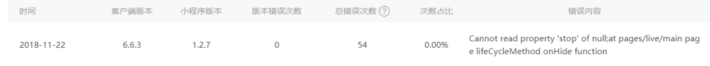
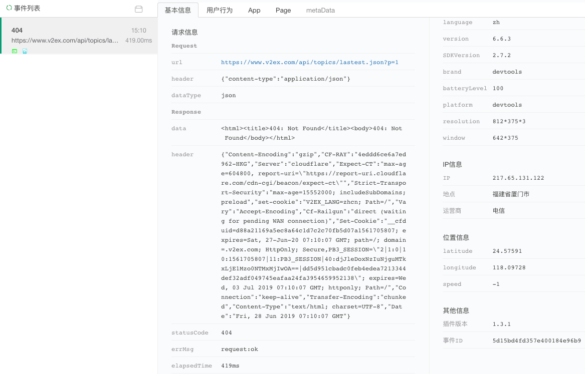

原文连接:https://www.cnblogs.com/fundebug/p/monitor-wx-request-fail.html
在微信小程序里，与后台服务器交互的主要接口函数是wx.request()，用于发起 HTTPS 网络请求。其重要性不言而喻。然而，却经常遇到请求失败的问题，笔者特意谷歌"wx.request 请求失败"，可以搜索到很多相关的文章，下面列出一些:
- wx.request 失败| 微信开放社区
- 微信小程序 wx.request 请求失败- SegmentFault 思否
- 小程序部分机型小程序用户无法发起 wx.request 请求，网络错误问题 ...
- wx.request()失败，request:fail。_微信小程序开发
- request:fail 合集（各种 request:fail 问题)
- 微信小程序之 wx.request:fail 错误排查- 简书
有些事开发时候遇到，有些是产品上线后遇到。线上的情况比开发和测试的时候复杂的多，失败的原因可能各种各样。既然测试无法 100%保证上线不会出问题，我们唯一要做的就是及时发现和快速响应。
微信小程序运维中心提供了错误日志记录，但功能还是比较有限。只有简单的统计和错误展示功能，而往往仅仅靠报错信息是无法清晰理解错误成因的。这个时候使用强大的第三方监控服务就很有必要了。

小程序 Demo
我们使用一款由jectychen开发的wechat-v2ex来做演示，v2ex 数据 api 基本上使用了 samuel1112 的仓库v2er里封装的方法。
其运行效果如下：
最左侧本来应该有头像的，可能由于防盗链的原因没有显示出来。
有时候一个微信小程序可能会用到多个第三方服务，从多个域名获取数据。以下两种情况都值得注意：
- 某些接口做了更新没有及时推送通知，该接口的调用就会失败；
- 服务不够稳定，接口的返回某一时段特别慢；
- 某些终端用户的数据不符合导致接口失败。
因此产品上线以后，对接口的调用进行监控是很有必要的。
接入监控
Fundebug 的微信小程序错误监控插件支持监控 HTTP 请求错误：
- 当请求返回的 statusCode 不是 2xx 或者 fail 回调函数被触发的时候，Fundebug 的小程序监控插件会捕获该错误并发送到服务器。
- 如果接口请求耗时过长，我们也可以配置
httpTimeout来监控。
要使用 Fundebug 监控，你需要去Fundebug网站注册账号并创建一个微信小程序监控项目，然后按照提示接入插件。你需要下载微信小程序监控的 JS 脚本放入到自己的项目中，然后引入并通过fundebug.init()函数作必要的配置。
var fundebug = require("./utils/fundebug.1.3.1.min.js");
fundebug.init({
apikey: "YOUR-API-KEY",
monitorHttpData: true,
httpTimeout: 2000,
monitorMethodCall: true,
monitorMethodArguments: true,
setSystemInfo: true,
setUserInfo: true,
setLocation: true
});插件默认会监控 HTTP 请求错误，并上报 Header 部分的信息，我们无需做配置。为了方便 Debug，我们配置monitorHttpData来记录 body 部分的信息；我们将httpTimeout设置为 2000 毫秒，超过该时长的请求会被上报到服务器。
Request:fail 错误
为了演示wx.request返回 request:fail 错误，我特意将utils/api.js中的HOST_URI改错。
var HOST_URI = 'https://www.w2ex.com/api/';
然后保存运行。Fundebug 收到上报的错误，该请求花了 7072 毫秒，然后返回请求失败。
通过用户行为可以更加清楚地了解整个小程序的运行过程：
404 错误
这次，我将获取最新话题的接口做点更改，故意将latest写出lastest：
var LATEST_TOPIC = 'topics/lastest.json';
保存运行，Fundebug 捕获该错误并上报到服务器：

参数错误
获取某一个话题详情的时候，应该传入对应的 id。如果 id 是 null、undefined、或则本来是数字我们传入字符串，看看结果怎么样。
下图可知当我们将参数 id 设为undefined的情况下，接口返回 404。并返回消息:
{
"message": "Object Not Found",
"status": "error"
}关于Fundebug
Fundebug专注于JavaScript、微信小程序、微信小游戏、支付宝小程序、React Native、Node.js和Java线上应用实时BUG监控。 自从2016年双十一正式上线，Fundebug累计处理了10亿+错误事件，付费客户有阳光保险、核桃编程、荔枝FM、掌门1对1、微脉、青团社等众多品牌企业。欢迎大家免费试用！

版权声明
转载时请注明作者 Fundebug以及本文地址：
https://blog.fundebug.com/2019/07/01/monitor-wx-request-fail/